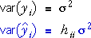

Variance of fitted values and residuals
As in simple linear regression with a single explanatory variable, although the errors (and hence all yi) have variance σ2, the residuals have variance that is lower than σ2 and that depends on the leverages of the values.
It can be proved that


Standardised residuals
Since different residuals have different variances, the solution is to standardise them using an estimate of their standard deviations,

If the normal linear model holds, the standardised residuals will have approximately normal(0, 1) distributions.
If the linear model holds, approximately 95% of these standardised residuals should therefore be between -2 and +2, and almost all should be between -3 and +3.
Non-constant variance
An important use of standardised residuals is to look for non-constant variance. When there is non-constant variance, it is usually a function of the mean response, often increasing as the response mean increases. Rather than plotting the standardised residuals against the separate explanatory variables, a single plot of the standardised residuals against the fitted values is usually sufficient.
A scatterplot of standardised residuals against fitted values usually has a 'funnel' shape if there is non-constant variance.
Non-constant variance is usually associated with nonlinearity and a transformation of the response often fixes both problems.
Plotting variables against the fitted values (advanced)
The fitted values are a linear combination of the two explanatory variables.
 = b0 + b1 xi
= b0 + b1 xi
Therefore a plot of any variable against the fitted values can be obtained by rotating a 3-dimensional scatterplot of this variable against X and Z.
Illustration
The scatterplot of the left initially displays Y against X. Click the y-x rotation button on the right to rotate the 3-dimensional scatterplot to show the same plot.
Now select Z from the lower pop-up menu and observe that this is equivalent to a different rotation of the 3-dimensional scatterplot.
Select Fitted values from the pop-up menu and observe that this is equivalent to an intermediate rotation of the 3-dimensional scatterplot that 'looks along' the regression plane.
Finally, repeat with plots of the standardised residuals.